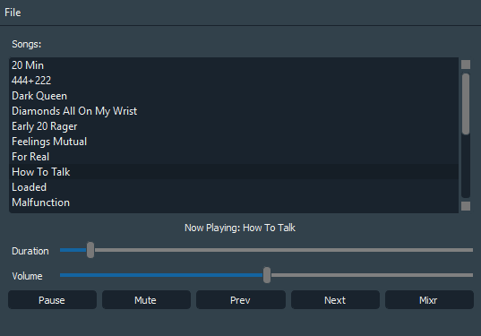

Simply, there are three classes: a song class, a playlist class, which held a collection of song objects, and a player class, which facilitated the interaction between a playlist object and the GUI. The song class only had two fields: the file path of the song along with the name of the song, which is the filename of the song. In the future, I hope to find a way to extract metadata from each song to get other attributes, such as the artist and album. But for now, this will suffice for my purposes.
Styling the Qt GUI was identical to styling using CSS. I decided to create a dark theme. The final result of this project after importing LUV Is Rage 2 looked something like this:

The code for this project can be viewed on my GitHub repository
here.
I will most likely come visit this project in the future. This is
a very simple music player, and lacks a lot of the functionality of a
modern music player. Nevertheless, this was a fun project that utilized
several object oriented design principles that I learned and achieved several goals
that I had.